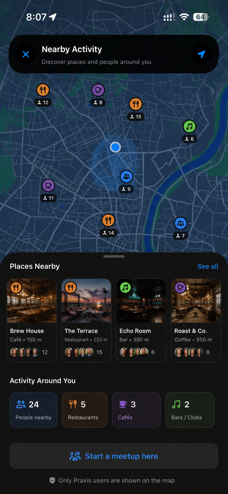
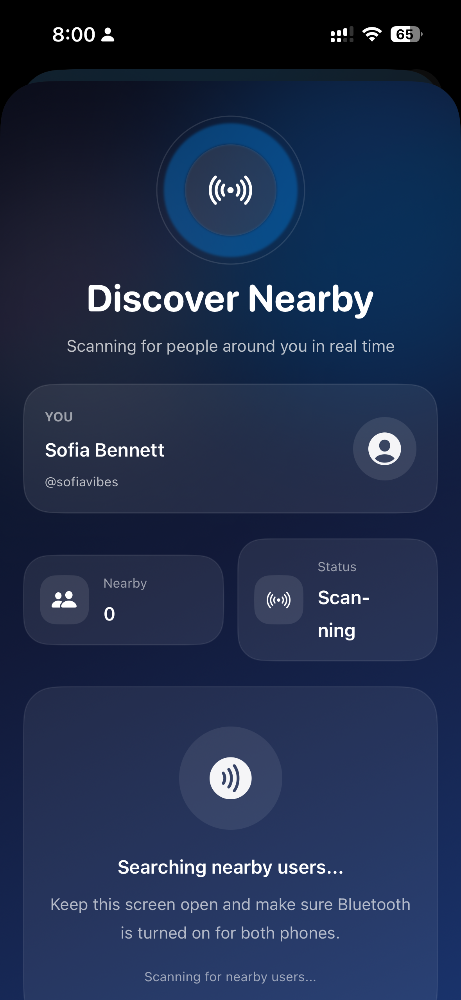
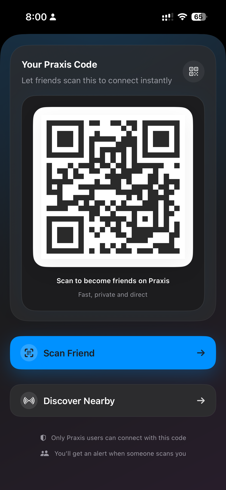
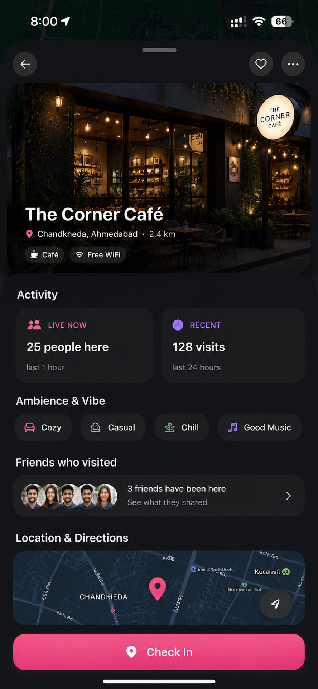

01 / NEARBY
Nearby discovery
See people and activity around you through a real-world social layer — you decide when you're discoverable.
Praxis is a nearby social media app for discovering people around you, sharing beautiful moments, and turning online connection into real-world plans.
Every post carries the person, place, and context behind the moment.
Praxis opens to a real-world feed of people, places, check-ins, and moments nearby.
01 / 05See who is behind the moment.
Photos and updates from real people.
Location, vibe, and intent in one place.
Turn a post into a conversation.
Open a profile to see identity, vibe, places, and moments — not just a photo.
Open a profile to see identity, interests, signals, vibe, places, and moments — not just a photo.
01 / 05What someone shares beyond a photo.
Signals that make a profile feel human.
Where moments and interests connect.
The story behind how someone shows up.
Follow lightly for public updates, then send a friend request when it matters.
Start lightly without pressure.
Send a friend request when it matters.
The request lands where it belongs.
One accept turns it into a real connection.
Sofia can follow Alex for public updates, then send a friend request. Alex accepts from Activity when he wants to connect back.
01 / 06Praxis is built around nearby people, real places, local events, and real-world connections that move beyond scrolling.
Most apps blur following and friendship into one. Praxis keeps them separate — so being seen and being trusted aren't the same thing.
Follow anyone whose activity you find interesting. It shapes your feed and powers discovery — a public, social signal.
Friendship is two-way and trusted. It's what unlocks the private side of Praxis — the moments you don't share with everyone.
You can follow without being friends, or be friends without following. The choice is always yours.
From nearby discovery to chat-native plans, Praxis is built to feel polished from the very first tap.
See people and activity around you through a real-world social layer — you decide when you're discoverable.
Hand-picked places only — never random listings. Check in, see who's there, and watch venues come alive.
Two relationships, kept separate. Follow openly for discovery — add Friends to unlock trusted, private moments.
Create an event right in a conversation. It becomes a card friends can RSVP to — Going, Maybe, Decline, live.
Phone verification, clear report and block flows, and visibility controls built in from day one.
Built natively in SwiftUI — fluid, polished interactions and a brand that feels global, not generic.
Nearby discovery, real-world plans, local activity, and social experiences built with a premium native feel.





On Praxis, plans don't live in some separate events tab. You make them right inside the conversation — where the people already are.
Every venue on Praxis is hand-picked — no random business listings. Check in, and the place reflects real activity in real time.
Every check-in is a photo and a moment — and you decide exactly how far it travels. Three levels, no guesswork.
Praxis is being built with a long-term vision: nearby discovery, real-world social experiences, and city-by-city growth.
Nearby discovery, social feeds, restaurant check-ins, events, and premium native polish.
Praxis launches in India with nearby people, real places, and effortless social planning.
Praxis expands to the United Kingdom with a city-based nearby social experience.
City-by-city growth, safer communities, richer venue activity, and more real-world plans.
Trust shouldn't take a dozen taps. Meet someone in real life, scan their code, and you're connected — no endless handshake.
Praxis profiles are built to say something real — what you're into, where you're at, and what you're open to. No bios that read like a résumé, no dating-app prompts.
Founder-led notes on nearby discovery, real-world connection, and why social should feel more human again.
Social media stopped feeling social. Here’s why we’re building Praxis around real-world connection instead of endless scrolling.
Read more →Modern platforms optimize for attention and consumption. We think there’s a better way.
Read more →Social apps became global first. We believe there’s enormous value in making social feel local again.
Read more →Social media helped the world connect — but somewhere along the way, it stopped feeling social.
Today, most platforms are built around endless scrolling, algorithms, isolation, and content consumption. You can spend hours online and still feel disconnected from the people and places around you.
We think there’s a better way.
Praxis is being built around real-world connection: nearby people, local places, spontaneous plans, shared experiences, and communities that feel alive.
We want discovering people nearby to feel natural. We want cities to feel more social. We want meeting friends, finding events, and discovering local activity to happen effortlessly.
Instead of another platform designed only to maximize screen time, Praxis is designed to help people spend more meaningful time in the real world.
This is only the beginning. Praxis is currently in development and planned to launch first on iOS in 2027.
Welcome to the next generation of social connection.
For most of the internet’s history, social platforms connected us to people far away.
But they rarely helped us connect with the people already around us.
You can spend hours online discovering creators, communities, and conversations happening across the world — while knowing almost nothing about the activity happening nearby.
Who’s at the same café? Who’s exploring the same city? Which places feel alive tonight? Where are your friends meeting? What’s happening around you right now?
Modern social apps became global first. But we believe there’s enormous value in making social feel local again.
Nearby discovery changes the feeling of a platform.
It transforms social media from passive consumption into real-world awareness.
Instead of endlessly scrolling through disconnected content, people can discover local activity, find nearby experiences, meet friends more naturally, create spontaneous plans, and feel more connected to their city.
That’s one of the ideas behind Praxis.
We’re building nearby discovery carefully: with privacy, intentionality, and user control built into the experience from the beginning.
People should decide when they’re discoverable, who can connect with them, and how visible they want to be.
Nearby technology should feel empowering — not invasive.
We also believe nearby social experiences can make cities feel more alive.
A restaurant becomes more social when you can see real activity. An event feels more dynamic when nearby people can discover it naturally. A city feels less isolating when meaningful connection becomes easier.
This isn’t just about technology.
It’s about making the digital world feel closer to real life again.
And we believe that’s where social platforms are heading next.
Praxis is location-based — so we designed privacy and trust into the product from day one, not as an afterthought.
You choose who can discover you nearby. Your location is never stored or shared with third parties.
Every profile has a clear report and block flow. Our team reviews reports and takes action fast.
Praxis uses phone verification to keep the community genuine and reduce fake or anonymous accounts.
Press enquiries, partnerships, investor interest, or opportunities to join the founding team — we'd love to hear from you.
We’re looking for exceptional builders who care deeply about product quality,
design, social technology, and real-world experiences.
Especially: iOS engineers · UI/UX designers · AI/ML engineers · creators · community builders.
We care more about obsession, taste, and execution than traditional resumes.
Join the waitlist for early access when we launch on the App Store.
✓ You're on the list — we'll be in touch.
Social media stopped feeling social.
Somewhere along the way, social media stopped being about people.
It became about algorithms, endless feeds, engagement metrics, and consuming content for hours without actually feeling connected to anyone around us.
You can open almost any app today and instantly see thousands of posts from strangers across the world — but still know nothing about the people nearby, the places around you, or what’s happening in your own city.
That feels backwards.
The internet made global connection easier than ever, but local connection slowly disappeared.
We think there’s a gap between digital life and real life that modern social platforms no longer solve well.
Most platforms optimize for attention and consumption. But very few are designed around spontaneity, local experiences, nearby people, real-world plans, and communities that feel alive.
That’s one of the reasons we started building Praxis.
Praxis is designed to feel more connected to the real world: discovering people nearby, seeing local activity, finding events, meeting friends, checking into places, and turning online interaction into real experiences.
We believe social apps should help people go outside more, discover their city, feel less isolated, meet more naturally, and create memories offline — not just consume content online.
Technology should make the real world feel more connected, not replace it.
That’s the direction we want Praxis to move toward. And this is only the beginning.